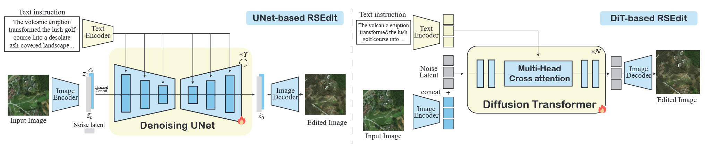
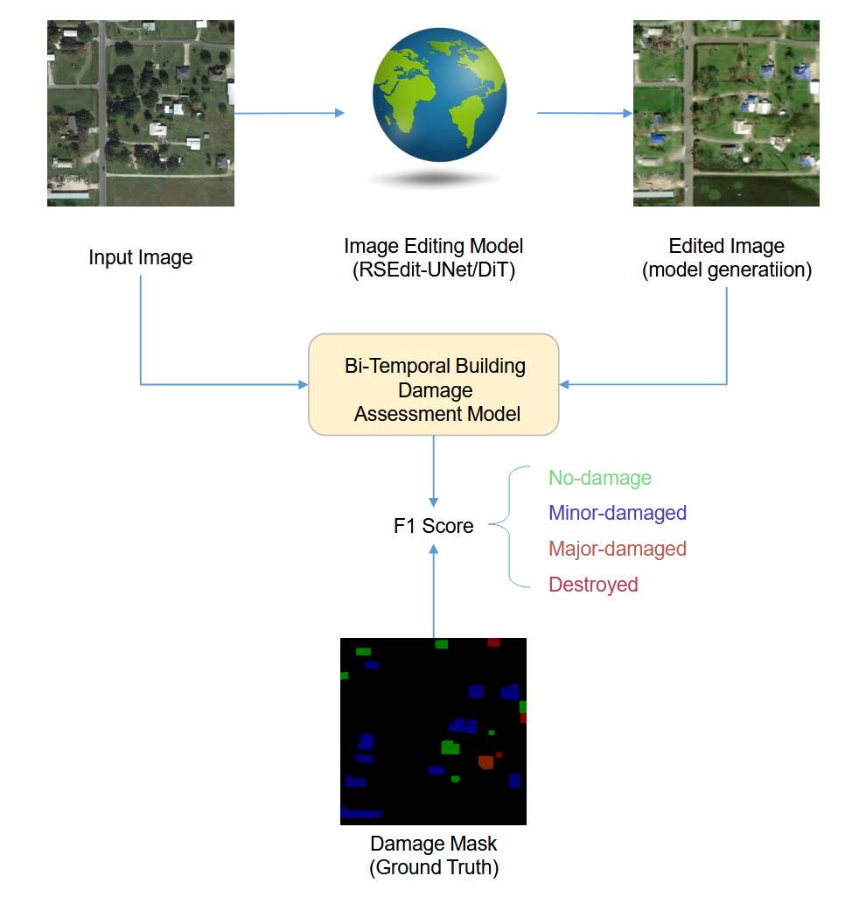
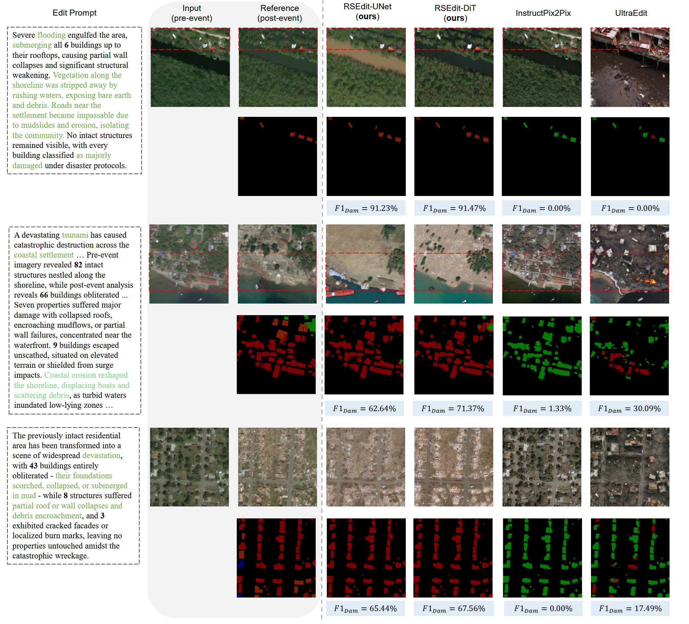
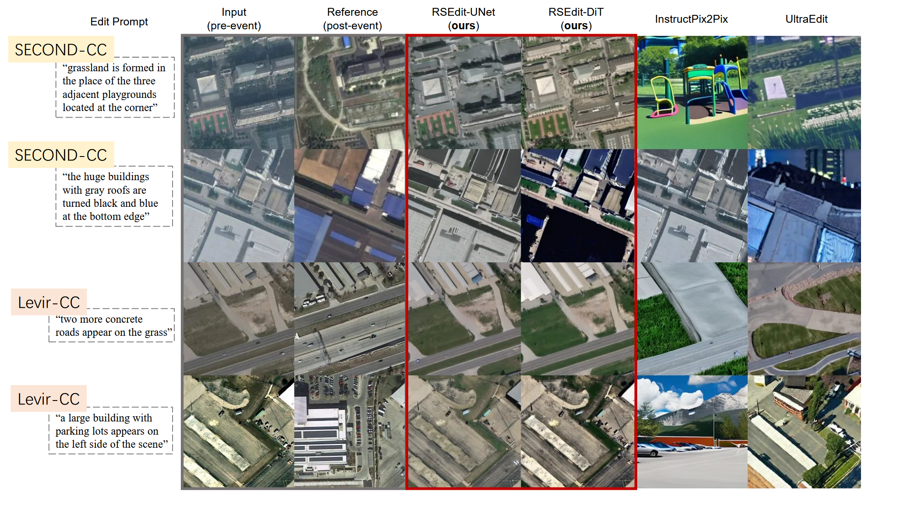

@misc{rsedit2026,
author = {Zhenyuan Chen, Zechuan Zhang, Feng Zhang},
title = {RSEdit: Text-Guided Image Editing for Remote Sensing},
howpublished = {\url{https://github.com/Bili-Sakura/RSEdit-preview}},
year = {2026}
}General-domain text-guided image editors achieve strong photorealism but introduce artifacts, hallucinate objects, and break the orthographic constraints of remote sensing (RS) imagery. We trace this gap to two high-level causes: (i) limited RS world knowledge in pre-trained models, and (ii) conditioning schemes that misalign with the bi-temporal structure and spatial priors of Earth observation data. We present RSEdit, a unified framework that adapts pretrained text-to-image diffusion models—both U-Net and DiT—into instruction-following RS editors via channel concatenation and in-context token concatenation. Trained on over 60,000 semantically rich bi-temporal remote sensing image pairs, RSEdit learns precise, physically coherent edits while preserving geospatial content. Experiments show clear gains over general and commercial baselines, demonstrating strong generalizability across diverse scenarios including disaster impacts, urban growth, and seasonal shifts, positioning RSEdit as a robust data engine for downstream analysis. We will release code, pretrained models, evaluation protocols, training logs, and generated results for full reproducibility.
@misc{rsedit2026,
author = {Zhenyuan Chen, Zechuan Zhang, Feng Zhang},
title = {RSEdit: Text-Guided Image Editing for Remote Sensing},
howpublished = {\url{https://github.com/Bili-Sakura/RSEdit-preview}},
year = {2026}
}
Overview of the RSEdit framework. We propose a universal adaptation strategy that aligns the conditioning mechanism with the architecture’s inductive bias. For U-Net backbones (left), we use channel concatenation to leverage convolutional priors. For DiT backbones (right), we use token concatenation to exploit the in-context learning capabilities of transformers.

Proposed change-centric evaluation metric using building damage assessment. We leverage a pre-trained ChangeStar model to produce semantic masks for the edited image and compare them to ground-truth damage masks to quantify editing accuracy.

Table 1: Change detection evaluation results. $F1_{\text{dam}}$ denotes the harmonic mean of per-class F1 scores following xView2 protocol. Bold indicates best results, underline indicates second best.
| Method | $F1_{\text{dam}} \uparrow$ | VIE Scores $\uparrow$ | ||
|---|---|---|---|---|
| SC | PQ | $\text{VIE}_{\text{overall}}$ | ||
| SD 1.5$^\dagger$ | 6.87 | 3.332 | 2.457 | 2.492 |
| SD 2.1$^\dagger$ | 6.05 | 2.958 | 2.042 | 2.120 |
| Text2Earth$^\dagger$ | 5.06 | 3.970 | 3.494 | 3.229 |
| InstructPix2Pix | 8.37 | 4.462 | 3.195 | 3.153 |
| MagicBrush | 0.96 | 2.205 | 2.006 | 1.638 |
| UltraEdit | 1.16 | 4.250 | 2.098 | 2.531 |
| Flux.1-Kontext | 5.41 | 5.065 | 4.047 | 3.693 |
| RSEditU-Net | 34.11 | 5.793 | 3.657 | 4.129 |
| RSEditDiT | 25.94 | 5.759 | 4.024 | 4.210 |

Out-of-domain generalization on LEVIR-CC and SECOND-CC test sets. Our model trained on RSCC generalizes well to unseen benchmarks without fine-tuning.
Table 3: Out-of-domain generalization on LEVIR-CC [Liu et al. 2022] and SECOND-CC [Karaca et al. 2025] test sets. Our model trained on RSCC generalizes well to unseen benchmarks without fine-tuning.
| Method | SC $\uparrow$ | PQ $\uparrow$ | VIE $\uparrow$ |
|---|---|---|---|
| LEVIR-CC | |||
| InstructPix2Pix | 4.98 | 2.33 | 2.71 |
| UltraEdit | 2.45 | 1.28 | 1.18 |
| RSEditU-Net | 3.88 | 3.97 | 2.74 |
| RSEditDiT | 3.85 | 4.41 | 2.82 |
| SECOND-CC | |||
| InstructPix2Pix | 3.94 | 1.87 | 1.96 |
| UltraEdit | 3.69 | 1.17 | 1.57 |
| RSEditU-Net | 4.28 | 2.67 | 2.61 |
| RSEditDiT | 4.60 | 3.00 | 2.91 |